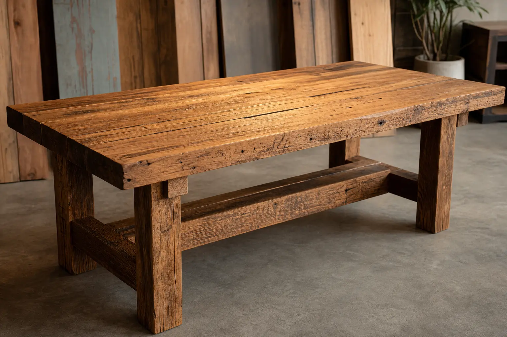
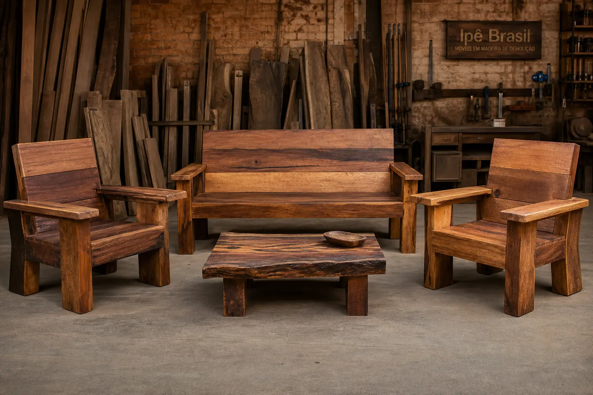
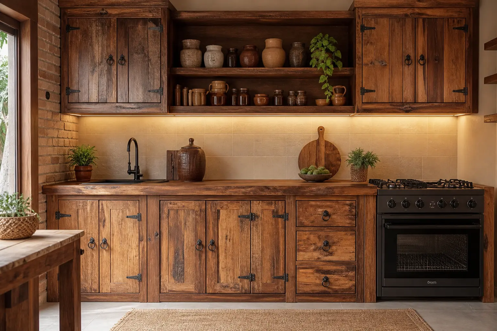
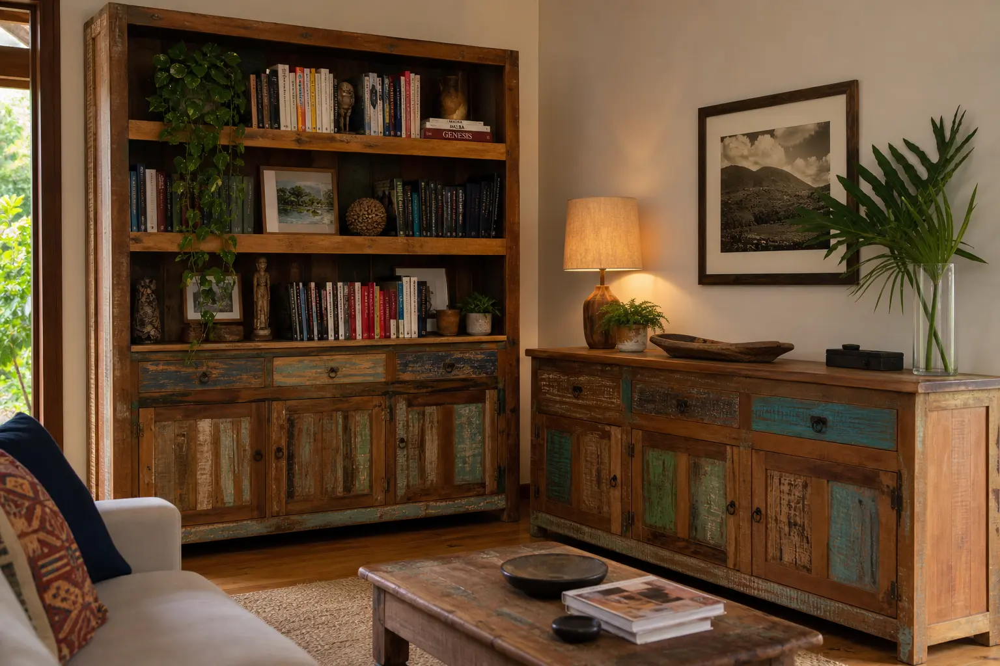
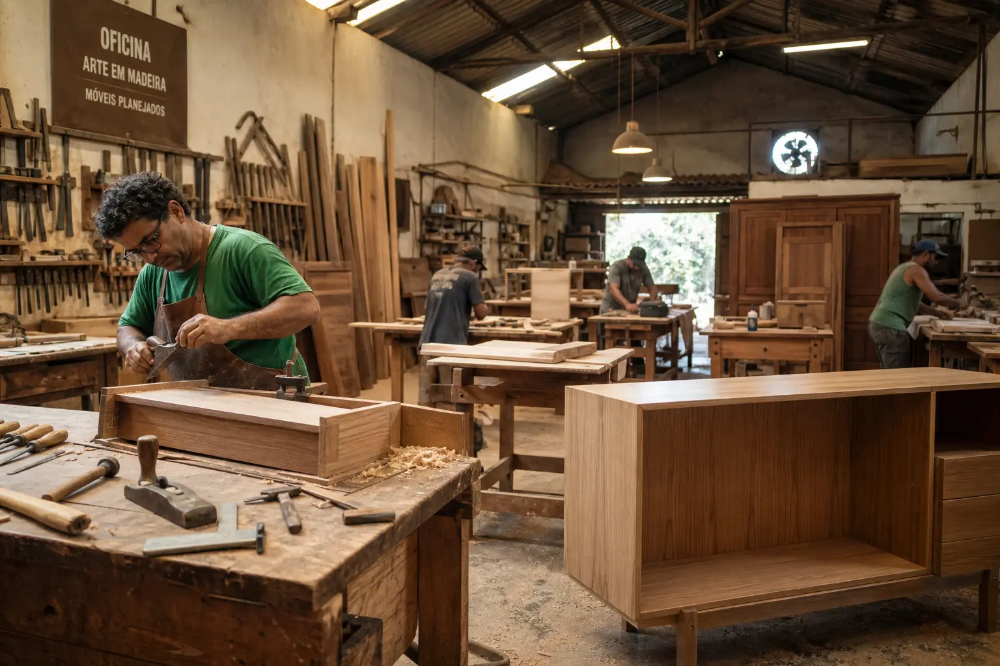

Artesanato em peroba, canafistola e outras madeiras nobres de demolição. Móveis prontos e projetos sob encomenda para famílias, empresas, chácaras e restaurantes de Terra Roxa e região.
peroba, canafistola e outras madeiras nobres
Projetos personalizados
Peças disponíveis na loja
Atendemos cidades vizinhas como: Guaíra – PR, Palotina – PR, Marechal Cândido Rondon – PR, Maripá – PR, Mercedes - PR, Nova Santa Rosa – PR, Quatro Pontes - PR, Santa Helena – PR, Francisco Alves – PR, Iporã - PR, Toledo - PR e Assis Chateaubriand - PR.
Cada peça é única, confeccionada com madeira recuperada de demolição, preservando a beleza natural dos veios e a resistência das madeiras nobres.

Cadeiras, bancos e banquetas artesanais para ambientes internos e externos.
Ver galeria →
Cozinhas completas e balcões sob medida para residências, chácaras e restaurantes.
Ver galeria →
Organização com charme: estantes, aparadores e móveis para sala e escritório.
Ver galeria →
Desde 1997, a MG Móveis Rústicos fabrica móveis artesanais utilizando madeira de demolição — como peroba, canafistola e outras madeiras nobres — para criar peças únicas que unem tradição, durabilidade e beleza natural.
As madeiras são obtidas do desmanche de casas antigas, que eram construídas com madeiras nobres da região, como peroba e canafístola, entre outras.
Atendemos famílias, empresas, chácaras e restaurantes da região, com móveis prontos e projetos totalmente personalizados.
A MG Móveis Rústicos atende clientes de Terra Roxa - PR e cidades vizinhas, como: Guaíra – PR, Palotina – PR, Marechal Cândido Rondon – PR, Maripá – PR, Mercedes - PR, Nova Santa Rosa – PR, Quatro Pontes - PR, Santa Helena – PR, Francisco Alves – PR, Iporã - PR, Toledo - PR e Assis Chateaubriand - PR.
Selecionamos cuidadosamente cada tábua para garantir qualidade, resistência e um visual incomparável.
Madeira brasileira clássica, de veios marcantes e excelente durabilidade. Ideal para mesas e móveis de destaque.
Textura única e coloração quente. Muito utilizada em cozinhas, balcões e peças de grande formato.
★★★★★Fizemos a cozinha completa da chácara com a MG Móveis. A madeira de peroba ficou espetacular e o Maurício caprichou em cada detalhe. Super recomendo!
★★★★★Montamos o restaurante com mesas e bancos de peroba. São resistentes, bonitos e nossos clientes elogiam todos os dias. Trabalho de primeira qualidade.
★★★★★Encomendei um aparador sob medida para a sala. Chegou exatamente como eu imaginava. Empresa de confiança, com décadas de experiência na região.